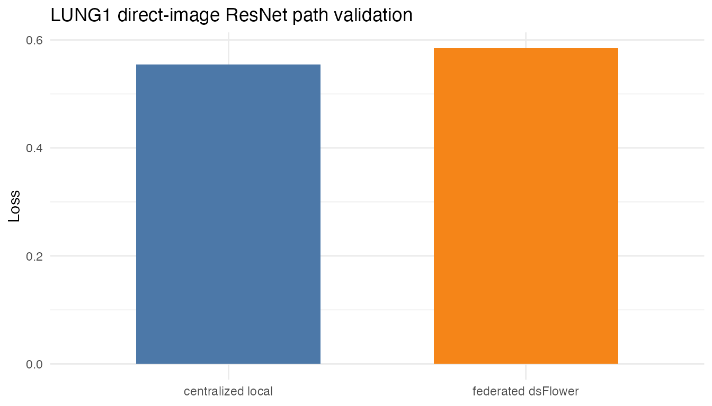

LUNG1 Direct dsImaging Image ResNet Evidence
lung1-direct-image-dsimaging-resnet.RmdThis article records the LUNG1 direct-image run used as thesis
evidence. The run trained pytorch_resnet18 directly from
NIfTI assets resolved by dsImaging, without first
converting the images into radiomic features. It is a technical path
validation rather than a clinical imaging result. The rendered article
uses the recorded output of the live May 2026 workflow so that package
checks do not require active Opal servers. The live workflow is
implemented in
inst/demos/dsimaging_direct_image_resnet.R.
The validation path is:
-
dsImagingresolves the LUNG1 imaging resource server-side withds.imaging.init(). -
dsFlowerClientwraps that server-side imaging handle withds.flower.connect()and trains thepytorch_resnet18template directly from the local NIfTI files, never moving image pixels. - A centralized PyTorch baseline on the pooled demo cohort provides a path-level comparison.
- Only aggregate training history and model parameters are returned.
Running This Validation
The steps below walk through the dsImaging to dsFlower handoff: connect to the nodes, resolve the server-side image resource with dsImaging, and train a federated vision model with dsFlower. The LUNG1 study is already registered as an imaging resource on three Opal/Rock nodes, each holding its own slice of patients; the NIfTI pixels never leave those nodes. The chunks are shown for reference and are not executed when the article renders; the recorded results of the real run follow.
1. Connect to the DataSHIELD nodes. Open a single session across the three Opal nodes that serve the LUNG1 imaging resource.
library(DSI)
library(DSOpal)
library(dsImagingClient)
library(dsFlowerClient)
builder <- DSI::newDSLoginBuilder()
builder$append(server = "node1", url = "https://opal-node-1.example.org",
user = "researcher", password = "********")
builder$append(server = "node2", url = "https://opal-node-2.example.org",
user = "researcher", password = "********")
builder$append(server = "node3", url = "https://opal-node-3.example.org",
user = "researcher", password = "********")
conns <- DSI::datashield.login(builder$build(), assign = FALSE)
resource <- "dsdemo.imaging_demo"2. Resolve the image resource with dsImaging.
ds.imaging.init() binds the imaging resource into the
server-side symbol img; the NIfTI pixels stay on each
Rock.
ds.imaging.init(conns, resource, symbol = "img")3. Train the federated model with dsFlower. Hand the
server-side img handle to ds.flower.connect(),
build a recipe around the pytorch_resnet18 template, run
FedAvg, then disconnect and log out. Only aggregate training history and
model parameters come back.
flower <- ds.flower.connect(conns, symbol = "img")
recipe <- ds.flower.recipe(
model = ds.flower.model.pytorch_resnet18(
n_classes = 2L, learning_rate = 0.0005,
batch_size = 1L, local_epochs = 1L
),
strategy = ds.flower.strategy.fedavg(),
privacy = ds.flower.privacy.sandbox_open(),
target = "os_2yr_alive",
num_rounds = 1
)
run <- ds.flower.run(flower, recipe, verbose = TRUE)
ds.flower.disconnect(flower)
DSI::datashield.logout(conns)Recorded Results
These results are loaded from the committed evidence artifact for run 12188684698149675604; no live Opal servers are contacted when the article renders.
Server-Side Image Resource
site_counts <- data.frame(
site = names(evidence$metadata_n),
samples = as.integer(unlist(evidence$metadata_n)),
row.names = NULL
)
class_counts <- data.frame(
class = names(evidence$local_baseline$class_counts),
samples = as.integer(unlist(evidence$local_baseline$class_counts)),
row.names = NULL
)
knitr::kable(site_counts)| site | samples |
|---|---|
| opal1 | 3 |
| opal2 | 3 |
| opal3 | 3 |
knitr::kable(class_counts)| class | samples |
|---|---|
| 0 | 7 |
| 1 | 2 |
The dsdemo.imaging_demo resource exposes NIfTI images across the three nodes, 9 samples in total, with os_2yr_alive as the federated target.
Training Configuration
training <- data.frame(
model = evidence$model,
strategy = "fedavg",
privacy_profile = evidence$privacy,
rounds = evidence$rounds,
local_epochs = evidence$local_baseline$epochs,
batch_size = evidence$local_baseline$batch_size,
learning_rate = evidence$local_baseline$learning_rate,
stringsAsFactors = FALSE
)
knitr::kable(training)| model | strategy | privacy_profile | rounds | local_epochs | batch_size | learning_rate |
|---|---|---|---|---|---|---|
| pytorch_resnet18 | fedavg | sandbox_open | 1 | 1 | 1 | 5e-04 |
Centralized vs Federated Result
comparison <- data.frame(
run = c("centralized local", "federated dsFlower"),
engine = c("PyTorch ResNet18", "DataSHIELD + Flower ResNet18"),
samples = c(evidence$local_baseline$n_samples, sum(site_counts$samples)),
sites_or_clients = c(1L, evidence$local_vs_federated$federated$clients),
rounds_or_epochs = c(evidence$local_baseline$epochs,
evidence$local_vs_federated$federated$rounds),
loss = c(evidence$local_baseline$eval$loss,
evidence$local_vs_federated$federated$loss),
accuracy = c(evidence$local_baseline$eval$accuracy, NA_real_),
failures = c(NA_integer_, evidence$local_vs_federated$federated$n_failures)
)
knitr::kable(comparison, digits = 4)| run | engine | samples | sites_or_clients | rounds_or_epochs | loss | accuracy | failures |
|---|---|---|---|---|---|---|---|
| centralized local | PyTorch ResNet18 | 9 | 1 | 1 | 0.5540 | 0.7778 | NA |
| federated dsFlower | DataSHIELD + Flower ResNet18 | 9 | 3 | 1 | 0.5847 | NA | 0 |
The centralized PyTorch baseline reached an evaluation loss of 0.554; the federated dsFlower run reached 0.5847 over 1 round(s) (delta 0.0307) with 0 client failures.
plot_data <- data.frame(
run = factor(comparison$run, levels = comparison$run),
loss = comparison$loss
)
if (requireNamespace("ggplot2", quietly = TRUE)) {
ggplot2::ggplot(plot_data, ggplot2::aes(x = run, y = loss, fill = run)) +
ggplot2::geom_col(width = 0.62, show.legend = FALSE) +
ggplot2::scale_fill_manual(values = c("#4C78A8", "#F58518")) +
ggplot2::labs(x = NULL, y = "Loss",
title = "LUNG1 direct-image ResNet path validation") +
ggplot2::theme_minimal(base_size = 11)
} else {
barplot(plot_data$loss, names.arg = as.character(plot_data$run),
ylim = c(0, max(plot_data$loss) + 0.15), ylab = "Loss",
main = "LUNG1 direct-image ResNet path validation",
col = c("#4C78A8", "#F58518"))
}
Cleanup And Evidence Scope
cleanup <- data.frame(
site = names(evidence$active_supernodes_after),
active_supernodes = as.integer(unlist(evidence$active_supernodes_after)),
row.names = NULL
)
knitr::kable(cleanup)| site | active_supernodes |
|---|---|
| opal1 | 0 |
| opal2 | 0 |
| opal3 | 0 |
After the run, every node reported zero active SuperNodes, so the cleanup step passed.
Validated claim. End-to-end functional validation that dsFlower can consume dsImaging-resolved server-side NIfTI image assets and train a vision template without transferring image pixels to the researcher.
Explicit non-claim. This nine-image run is a technical path validation, not a clinical imaging benchmark.